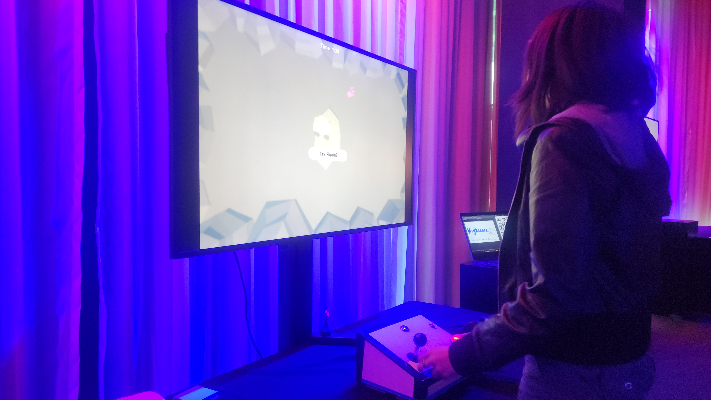
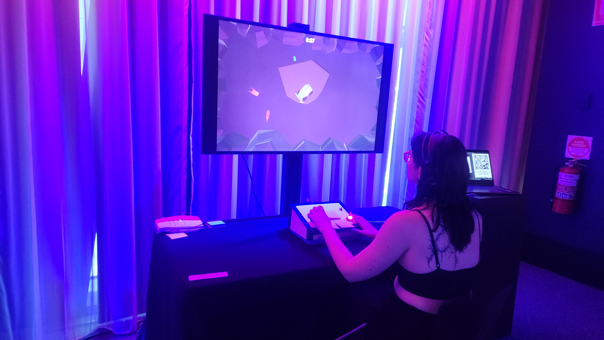
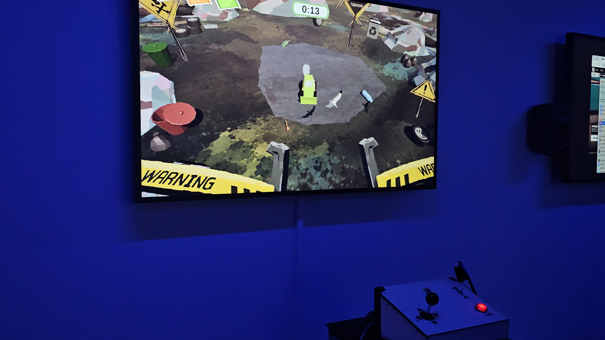

COMPACT'D
Compact'd is a fast-paced survival game that puts players behind the controls of a landfill compactor, challenging them to push incoming trash back into the landfill before becoming overwhelmed. As the game progresses, trash moves increasingly faster, while random hazards and gameplay events interrupt the player's efforts to survive. Designed around a custom physical controller inspired by a compactor's control panel, the experience combines arcade-style gameplay with an immersive, playful take on the growing problem of landfill waste.
My Contribution
Unity Gameplay Development
Developed the core gameplay systems in Unity, including truck controls, trash interactions, a polygon-based trash pile system, gameplay events and difficulty scaling.
Made with: Unity • C# • Arduino • Cursor • Clip Studio Paint • Blender • Illustrator • Ableton Live


The project prototype was chosen to be featured at the ACMI audience lab to be shown to the general public.

Our group was chosen to feature at the RMIT Grad Show for Digital Media.